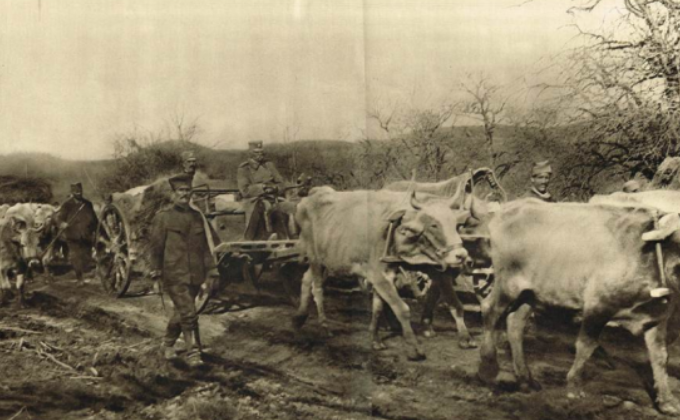

4. Krce, krce, nova kola
Grince, grince
(Trinaesta Rukovet - 13ème guirlande :05:32 - 06:16 )

Retraite de l'armée serbe en automne 1915
ÐовлаÑеÑе ÑÑпÑке воÑÑке Ñ ÑеÑен 1915
|
|
|
|
 Version Mokranjac |
 Pevaju; Vera RaduloviÄ i Nada JovanoviÄ |
NOTES
|
[1] Ðознавао Ñам воловÑкa кола, Ñ ÐиÑÑ 1964. ÐÑиликом вожÑе моÑоÑом oд ÐиÑa дo ÐиÑкe ÐаÑe, Ð¼Ð¾Ñ Ð²Ð¾Ð·Ð°Ñ je пÑозвао виÑе пÑÑа возила коÑа ÑÑ ÑÑебала биÑи опÑемÑена ÑеÑеÑима! Ðа гоÑÑÐ¾Ñ ÑоÑогÑаÑиÑи Ñе види да ÑÑ 1915. године Ñ ÑаÑÑ ÑÑеÑÑвовали и волови поÑед 8 милиона коÑа од коÑиһ не знамо колико Ñе ÑмÑло од лÑдила ÑÑди. |
[1] J'ai connu les charrettes à boeufs à Niš en 1964. Lors d'un trajet en moto Niš - Niška Banja, mon conducteur pestait contre ces véhicules qui auraient dû être équipés de lanternes! La photo ci-dessus montre qu'en 1915 les boeufs participaient à la guerre en plus des 8 millions de chevaux dont on ignore combien sont morts de la folie des hommes. |